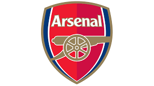

Lig Hakkında
Premier League (genellikle İngiltere dışında English Premier League (EPL) olarak adlandırılır), İngiliz futbolunda lig sisteminin en üst seviyesindeki ligdir. Her yılın ağustos ayında başlayan ve toplam 20 takımın katılımıyla gerçekleşen ligin sona ermesinin ardından, bağlı bulunan English Football League'den üç takım terfi ederken Premier League'den üç takım küme düşer. Premier League, üye kulüplerin hissedar olarak hareket ettiği bir şirkettir. Ağustostan mayısa kadar devam eden bir sezonda, her takımın birbiri ile iç ve dış sahada birer tane olmak üzere iki kere karşılaştığı 38 lig haftasından oluşur.Maçlar genellikle cumartesi ve pazar öğleden sonraları oynanmakla beraber haftanın her günü müsabaka olabildiği ve genellikle bir takvim haftası içerisinde birden fazla lig haftası geçildiği için bu tarihlere hafta yerine 20 takımın birbiri ile karşılaştığı on adet müsabakadan oluşan müsabaka günü (matchday) tabiri kullanılır. Premier League, kurulduğu günden bu yana 49 İngiliz ve iki Galler kulübüne (Swansea City ve Cardiff City) ev sahipliği yaptı ve böylece sınır ötesi bir lig haline geldi. Organizasyon, Football League First Division'da yer alan kulüplerin, 1888 yılında kurulan Football League'den ayrılma kararını takiben 20 Şubat 1992'de FA Premier League ismiyle kuruldu. Lige katılan takımlar kazançlı bir televizyon hakları anlaşmasından yararlandılar.Anlaşma, 2013-2014 yılları arasında yurt içinde £1 milyar değerinde idi ve BSkyB ile BT Group, sırasıyla 116 ve 38 maçı yayınlama hakkına sahipti.Lig, yerli ve uluslararası televizyon haklarından da yılda €2,2 milyar değerinde gelir sağlıyordu. 2014-15 yılında takımlar £1,6 milyar gelir elde ederken,2016-17 yılında bu sayı hızla artarak £2,4 milyara ulaştı ve takımlar arasında paylaştırıldı.Premier League, dünyanın en çok izlenen spor ligidir ve 212 bölgede 643 milyon eve, 4,7 milyar potansiyel TV izleyicisine yayın yapmaktadır.2014-15 sezonunda, 36.000 seyirci ortalamasına sahip Premier League,43.500 ortalamalı Bundesliga'nın arkasından herhangi bir profesyonel futbol liginde ikinci en yüksek seyirci ortalamasına sahip oldu.Çoğu stadyum tam kapasitesine yakın bir doluluk oranına sahiptir.Premier League, 2018 yılından itibaren son beş sezon boyunca Avrupa kupalarındaki performanslara bağlı olarak oluşturulan, liglerin UEFA katsayılarında birinci sırada yer almaktadır. Premier League'in kurulduğu 1992 yılından bu yana toplam elli bir kulüp mücadele etti. Bunlardan yedisi ligi kazanma başarısı gösterdi: Manchester United 13 kez, Manchester City 8 kez, Chelsea 5 kez, Arsenal 3 kez, Blackburn Rovers, Leicester City ve Liverpool ise 1'er kez. Arsenal 2003-04 sezonunun sonunda, tek bir maç kaybetmeden ligi zirvede tamamladı. Böylece bir Premier League sezonunu maç kaybetmeden şampiyon tamamlayan ilk ve tek kulüp oldu. Bu sayede yenilmezler anlamına gelen "The Invincibles" lakabını aldı. Manchester City ise 2017-18 sezonunda ligde toplam 100 puana ulaşarak lig tarihinde bir sezon içerisinde en çok puan toplayan takım unvanını kazandı. Ayrıca Manchester City, ligde 2020-21 ve 2023-24 sezonları arasında 4 kez üst üste şampiyonluk yaşayarak, üst üste en çok şampiyonluk yaşayan takım olma unvanını da elinde tutmaktadır. Ligin tamamlanan son sezonu olan 2023-24 sezonunda ise şampiyonluğa ulaşan takım, Manchester City olmuştur.
Ünlü Takımlar
Manchester United
Stad : Old Trafford Stadyumu
Liverpool

Stad : Anfield Stadyumu
Manchester City
Stad : Etihad Stadyumu
Arsenal
Stad : Emirates Stadyumu